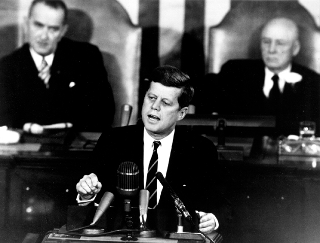

National Aeronautics and Space Administration
National Aeronautics and Space Administration
NASA History Office
The Decision to Go to the Moon:
President John F. Kennedy's May 25, 1961 Speech
before a Joint Session of Congress

On May 25, 1961, President John
F. Kennedy announced before a special joint session of Congress the dramatic and
ambitious goal of sending an American safely to the Moon before the end of the
decade. A number of political factors affected Kennedy's decision and the timing
of it. In general, Kennedy felt great pressure to have the United States "catch
up to and overtake" the Soviet Union in the "space race." Four years after the
Sputnik shock of 1957, the cosmonaut Yuri Gagarin had become the first human in
space on April 12, 1961, greatly embarrassing the U.S. While Alan Shepard became
the first American in space on May 5, he only flew on a short suborbital flight
instead of orbiting the Earth, as Gagarin had done. In addition, the Bay of Pigs
fiasco in mid-April put unquantifiable pressure on Kennedy. He wanted to announce
a program that the U.S. had a strong chance at achieving before the Soviet Union.
After consulting with Vice President Johnson, NASA Administrator James Webb, and
other officials, he concluded that landing an American on the Moon would be a
very challenging technological feat, but an area of space exploration in which
the U.S. actually had a potential lead. Thus the cold war is the primary contextual
lens through which many historians now view Kennedy's speech.
The decision involved much consideration before making it public, as well as enormous human efforts and expenditures to make what became Project Apollo a reality by 1969. Only the construction of the Panama Canal in modern peacetime and the Manhattan Project in war were comparable in scope. NASA's overall human spaceflight efforts were guided by Kennedy's speech; Projects Mercury (at least in its latter stages), Gemini, and Apollo were designed to execute Kennedy's goal. His goal was achieved on July 20, 1969, when Apollo 11 commander Neil Armstrong stepped off the Lunar Module's ladder and onto the Moon's surface.
In honor of Kennedy's historic speech, below are some documents and other
information relating to the decision to go to the Moon and Project Apollo that we hope you find useful.
Links to full text and audio versions of Kennedy's May 25, 1961 speech, as well as other key speeches and documents
Pdf versions of key original
documents
Lots of information about Project Apollo
A cool site devoted to the 30th anniversary of Apollo 11 in 1999
"Washington Goes to the Moon": A two-part radio program produced by WAMU-FM in Washington, D.C. that deals with the political story behind Project Apollo.
Updated March 24, 2004
Steven J. Dick, NASA Chief Historian
Steve Garber, NASA History Web Curator
For further information E-mail histinfo@hq.nasa.gov